Inspecting circuits¶
Aim
To learn about the options available in RTNeuron for inspecting circuits.
Individual cells¶
Each cell can be isolated by clicking on its soma. This isolates the cell and displays its soma, dendrites, and axon.
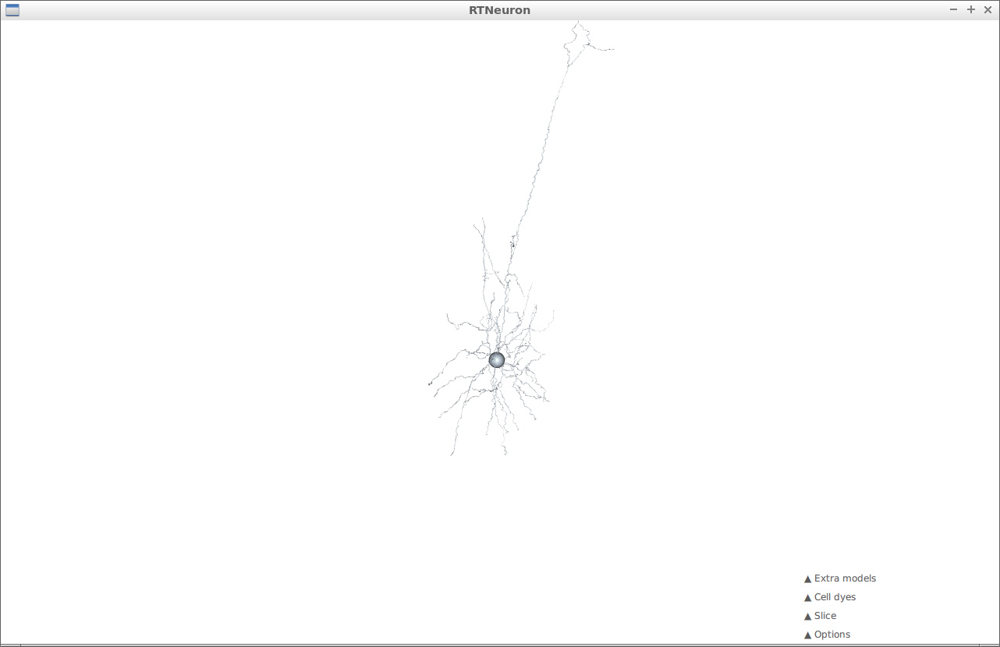Return to the view of the whole circuit by clicking on the soma again.
Slice planes¶
Creation¶
Slice planes can be added to the view by expanding the Slice tab and clicking Add.
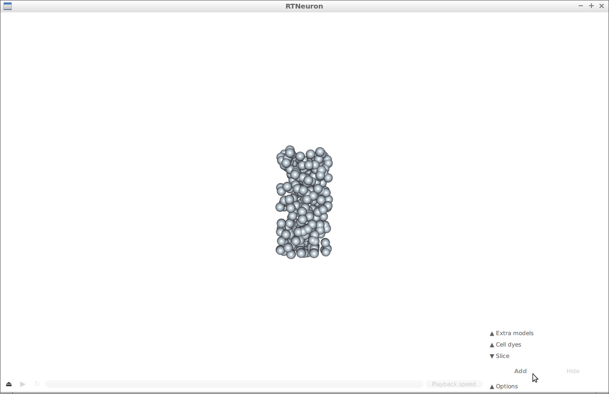This displays a pair of planes in the view which restrict the geometry displayed.
Adjustment¶
You can adjust the width of the slice by changing the width parameter in the Slice tab.
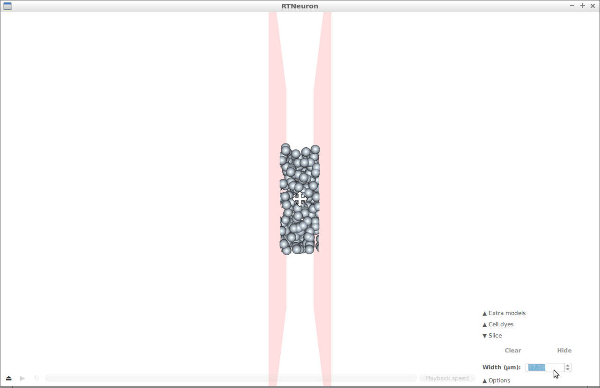The slice can be moved clicking and dragging on the widget centred between the planes.
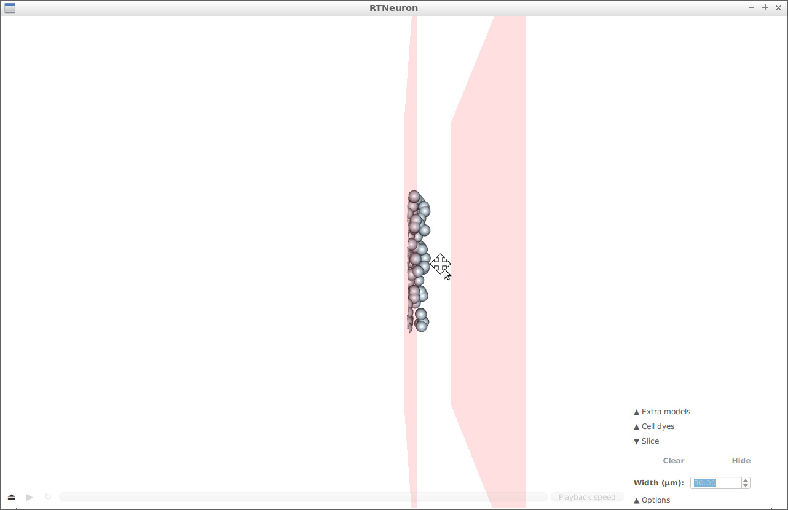The slice can be rotated by clicking the widget centered between the planes so that it changes to the rotation widget.
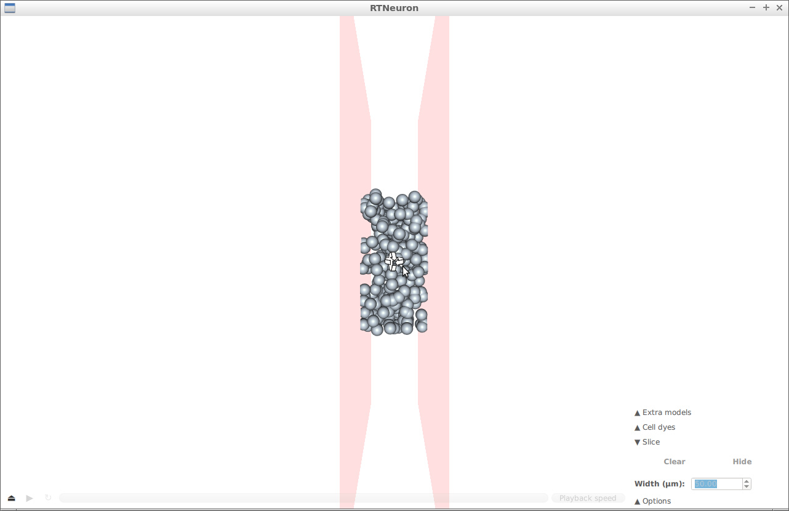Clicking and dragging the widget will rotate the slice.
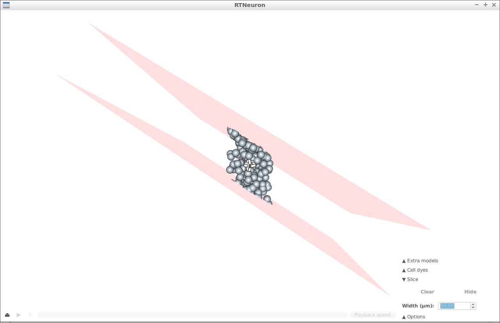The planes can be hidden by clicking Hide in the Slice tab. This will hide the planes but retain their effect on the displayed geometry.
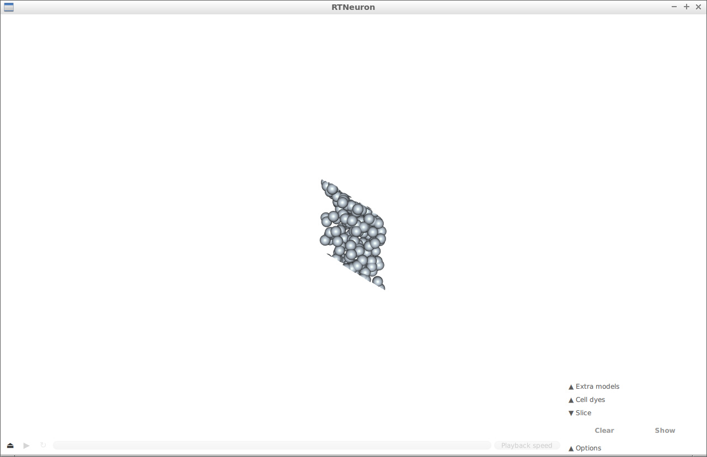Removing¶
To remove the planes and their effect, click Clear.
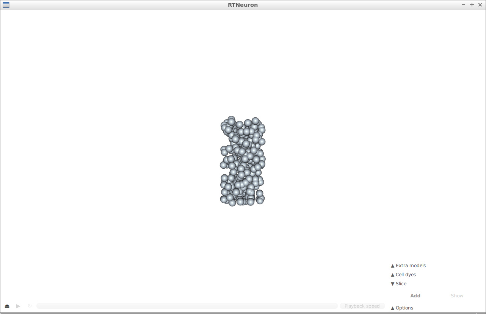Background color¶
The background color of the view can be adjusted under the Options tab.
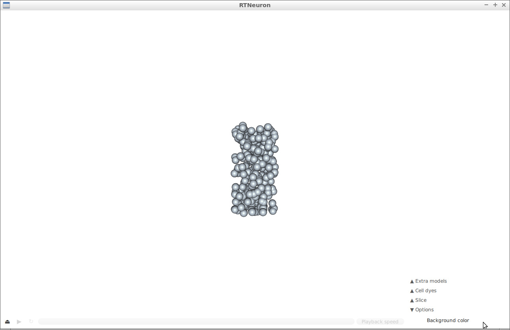Click in the color swatch to the right of the Background color label. This will show a color selector that you can use to change the background color.
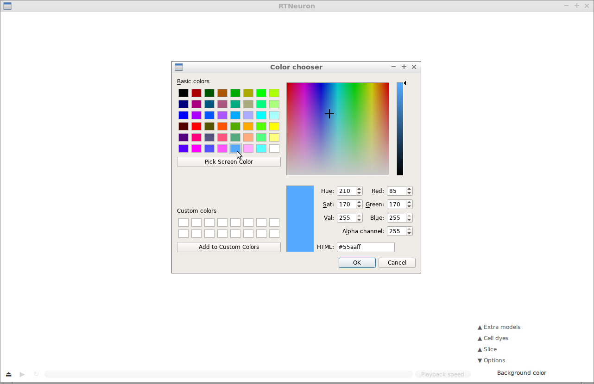The default color is white.
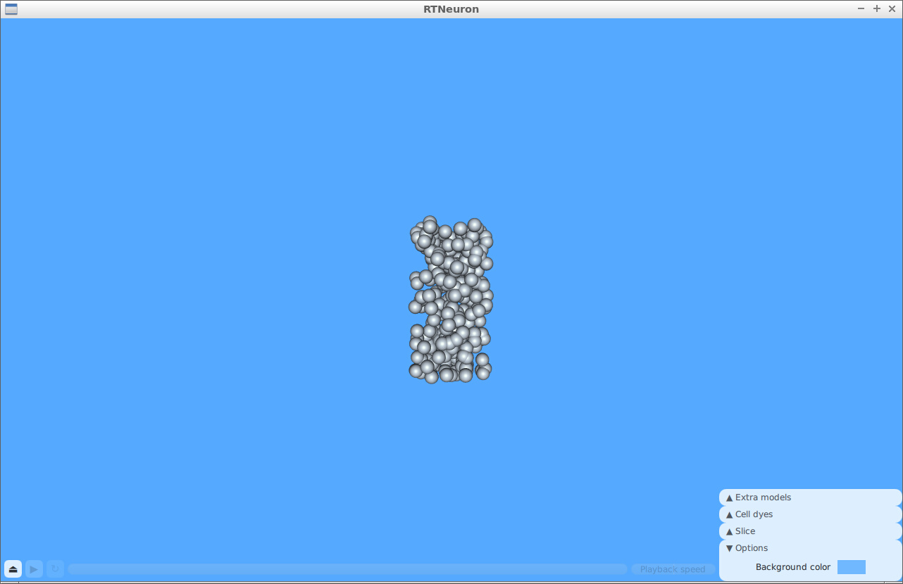Cell dyes¶
Cell dyes are not currently compatible with Sonata data.
Extra models¶
You can load your own .obj models into the view by selecting Add model
under the Extra models tab.
Congratulations
You can now change how you visualize your data in RTNeuron!